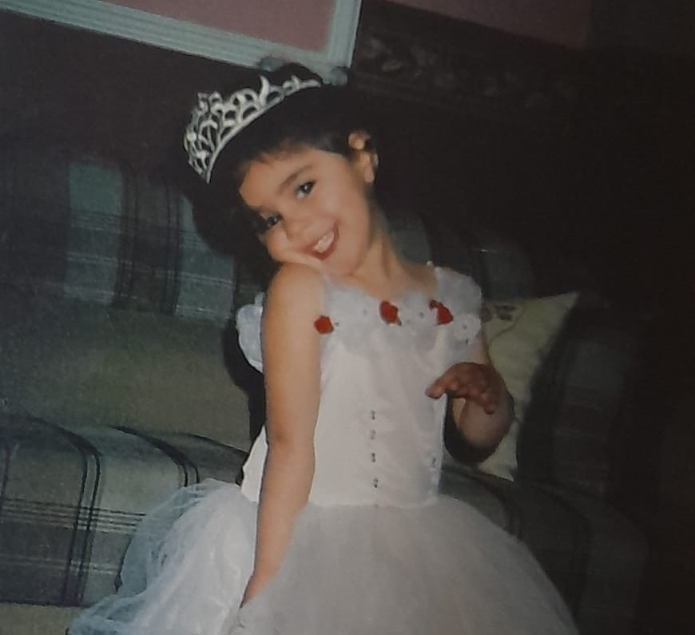

SEKVAN DURAK

SEKVAN DURAK
SEKVAN DURAK
SEKVAN DURAK
Merhaba ben SEKVAN DURAK, 15 Kasim 2000'te Mardin'de dünyaya geldim. 23 yaşımdayım. Sakarya Üniversitesi Bilgisayar Mühendisliği 3. sınıf öğrencisiyim.
Hobilerim:
Formula 1'in heyecan verici dünyasına bayılıyorum. Hız, teknoloji ve rekabetin mükemmel bir karışımı olan bu sporu takip etmekten büyük keyif alıyorum. Özellikle son dönemde Max Verstappen'in performansı ve Red Bull Racing'in yükselişi beni çok etkiledi.
UFC'nin dövüş sanatları dünyasındaki en üst düzey organizasyon olduğunu düşünüyorum. Farklı disiplinlerden gelen dövüşçülerin mücadelelerini izlemek beni her zaman heyecanlandırıyor. Jon Jones ve Israel Adesanya gibi dövüşçülerin yetenekleri ve dövüş stillerine hayranım.
Kod yazmak benim için hem bir hobi hem de gelecekteki kariyerim için önemli bir beceri. Özellikle web geliştirme ve yapay zeka alanlarına büyük ilgi duyuyorum. Python, JavaScript ve React gibi teknolojileri öğrenmek için sürekli kendimi geliştiriyorum.
Boş zamanlarımda sosyalleşmeyi ve yeni insanlarla tanışmayı seviyorum. Konserler, festivaller ve diğer sosyal etkinliklere katılmak benim için önemli bir aktivite.


|
|
|
Yahya Kemal Beyatlı – Bir Başka TepedenSana dün bir tepeden baktım aziz İstanbul! Görmedim gezmediğim, sevmediğim hiçbir yer. Ömrüm oldukça, gönül tahtıma keyfince kurul! Sade bir semtini sevmek bile bir ömre değer. Nice revnaklı şehirler görülür dünyada, Lakin efsunlu güzellikleri sensin yaratan. Yaşamıştır derim, en hoş ve uzun rü’yada Sende çok yıl yaşayan, sende ölen, sende yatan. |